pacman::p_load(sf, terra, spatstat,
tmap, rvest, tidyverse)First-order Spatial Point Patterns Analysis Methods
Hands-on Exercise 2
1 Overview
I use this page to follow the Chapter 4 point pattern workflow with the local childcare centre and subzone datasets. The main thing I am checking is how the intensity of childcare centres changes across Singapore.
The two practical questions I keep in mind are simple: are childcare centres randomly distributed across Singapore, and where do higher concentrations appear?
2 The Data
Two geospatial datasets are used:
- Child Care Services, represented as point features.
- Master Plan 2019 Subzone Boundary (No Sea), represented as polygon features.
The local project uses GeoJSON copies of both datasets in Hands-on_Ex/Hands-on_Ex02/data. I keep all paths relative to this chapter folder so the project can still render after being cloned.
3 How I Think About the Method Choices
| Choice | Why it matters in this exercise | What I watch for |
|---|---|---|
| Study window | It defines where points are allowed to occur | Singapore-wide and planning-area results should not be treated as the same question |
| Projected CRS | Distance calculations need metre-based coordinates | EPSG:3414 keeps nearest-neighbour and KDE distances meaningful |
| Bandwidth | It controls how smooth the KDE surface becomes | A very smooth surface can hide local peaks; a very sharp one can over-emphasise noise |
| Kernel | It changes how density is spread around each point | I compare kernels as a sensitivity check, not as the main conclusion |
NoteMy learning point
For first-order point pattern analysis, the study window and bandwidth feel just as important as the points themselves. The same childcare centres can look more clustered or more evenly spread depending on the scale at which I summarise them.
4 Installing and Loading the R Packages
5 Importing and Wrangling Geospatial Data Sets
NoteLocal implementation note
The local working datasets are stored as GeoJSON, with the useful boundary attributes already extracted. The import code therefore uses local st_read() paths and only uses the KML extraction helper when a Description field is present.
mpsz_sf <- st_read("data/MasterPlan2019SubzoneBoundaryNoSeaGEOJSON.geojson",
quiet = TRUE) %>%
st_zm(drop = TRUE, what = "ZM") %>%
st_transform(crs = 3414)extract_kml_field <- function(html_text, field_name) {
if (is.na(html_text) || html_text == "") return(NA_character_)
page <- read_html(html_text)
rows <- page %>% html_elements("tr")
value <- rows %>%
keep(~ html_text2(html_element(.x, "th")) == field_name) %>%
html_element("td") %>%
html_text2()
if (length(value) == 0) NA_character_ else value
}if ("Description" %in% names(mpsz_sf)) {
mpsz_sf <- mpsz_sf %>%
mutate(
REGION_N = map_chr(Description, extract_kml_field, "REGION_N"),
PLN_AREA_N = map_chr(Description, extract_kml_field, "PLN_AREA_N"),
SUBZONE_N = map_chr(Description, extract_kml_field, "SUBZONE_N"),
SUBZONE_C = map_chr(Description, extract_kml_field, "SUBZONE_C")
) %>%
select(-Name, -Description) %>%
relocate(geometry, .after = last_col())
} else {
mpsz_sf <- mpsz_sf %>%
select(REGION_N, PLN_AREA_N, SUBZONE_N, SUBZONE_C, geometry)
}mpsz_cl <- mpsz_sf %>%
filter(SUBZONE_N != "SOUTHERN GROUP",
PLN_AREA_N != "WESTERN ISLANDS",
PLN_AREA_N != "NORTH-EASTERN ISLANDS")write_rds(mpsz_cl,
"data/mpsz_cl.rds")childcare_sf <- st_read("data/ChildCareServices.geojson",
quiet = TRUE) %>%
st_zm(drop = TRUE, what = "ZM") %>%
st_transform(crs = 3414)The projected CRS is important here because the point pattern methods below use distance. Longitude and latitude are good for storing global positions, but metres are more appropriate for measuring nearest neighbours and KDE bandwidths.
5.1 Mapping the Geospatial Data Sets
# The website version renders this as a static map so the Netlify page
# remains lightweight and reliable.
tmap_mode('plot')
tm_shape(childcare_sf)+
tm_dots(size = 0.015)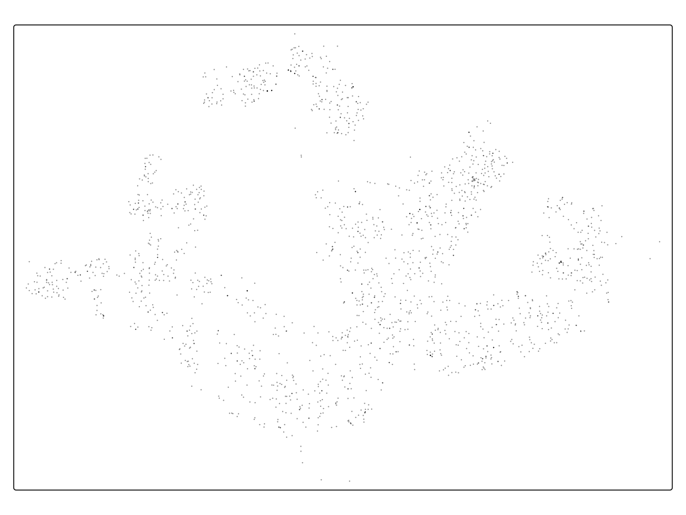
tmap_mode('plot')6 Geospatial Data Wrangling
For this exercise, sf stores the raw geospatial layers with their attributes, ppp stores the point pattern for spatstat, and owin stores the observation window. I think of them as three different shapes of the same problem: data layer, point process, and study area.
6.1 Converting sf Data Frames to ppp Class
childcare_ppp <- as.ppp(childcare_sf)class(childcare_ppp)[1] "ppp"summary(childcare_ppp)Marked planar point pattern: 1925 points
Average intensity 2.417323e-06 points per square unit
Coordinates are given to 11 decimal places
Mark variables: OBJECTID, ADDRESSBLOCKHOUSENUMBER, ADDRESSBUILDINGNAME,
ADDRESSPOSTALCODE, ADDRESSSTREETNAME, ADDRESSTYPE, DESCRIPTION, HYPERLINK,
LANDXADDRESSPOINT, LANDYADDRESSPOINT, NAME, PHOTOURL, ADDRESSFLOORNUMBER,
INC_CRC, FMEL_UPD_D, ADDRESSUNITNUMBER
Summary:
OBJECTID ADDRESSBLOCKHOUSENUMBER ADDRESSBUILDINGNAME ADDRESSPOSTALCODE
Min. :24641 Length :1925 Length :1925 Length :1925
1st Qu.:25122 N.unique : 0 N.unique : 0 N.unique :1739
Median :25603 N.blank : 0 N.blank : 0 N.blank : 0
Mean :25603 Min.nchar: NA Min.nchar: NA Min.nchar: 5
3rd Qu.:26084 Max.nchar: NA Max.nchar: NA Max.nchar: 6
Max. :26565 NAs :1925 NAs :1925
ADDRESSSTREETNAME ADDRESSTYPE DESCRIPTION HYPERLINK
Length :1925 Length :1925 Length :1925 Length :1925
N.unique :1923 N.unique : 0 N.unique : 1 N.unique : 0
N.blank : 0 N.blank : 0 N.blank : 0 N.blank : 0
Min.nchar: 25 Min.nchar: NA Min.nchar: 19 Min.nchar: NA
Max.nchar: 100 Max.nchar: NA Max.nchar: 19 Max.nchar: NA
NAs :1925 NAs :1925
LANDXADDRESSPOINT LANDYADDRESSPOINT NAME PHOTOURL
Length :1925 Length :1925 Length :1925 Length :1925
N.unique : 0 N.unique : 0 N.unique :1572 N.unique : 0
N.blank : 0 N.blank : 0 N.blank : 0 N.blank : 0
Min.nchar: NA Min.nchar: NA Min.nchar: 9 Min.nchar: NA
Max.nchar: NA Max.nchar: NA Max.nchar: 74 Max.nchar: NA
NAs :1925 NAs :1925 NAs :1925
ADDRESSFLOORNUMBER INC_CRC FMEL_UPD_D ADDRESSUNITNUMBER
Length :1925 Length :1925 Length :1925 Length :1925
N.unique : 0 N.unique :1925 N.unique : 1 N.unique : 0
N.blank : 0 N.blank : 0 N.blank : 0 N.blank : 0
Min.nchar: NA Min.nchar: 16 Min.nchar: 14 Min.nchar: NA
Max.nchar: NA Max.nchar: 16 Max.nchar: 14 Max.nchar: NA
NAs :1925 NAs :1925
Window: rectangle = [11810.03, 45404.24] x [25596.33, 49300.88] units
(33590 x 23700 units)
Window area = 796335000 square units6.2 Creating owin Object
sg_owin <- as.owin(mpsz_cl)class(sg_owin)[1] "owin"plot(sg_owin)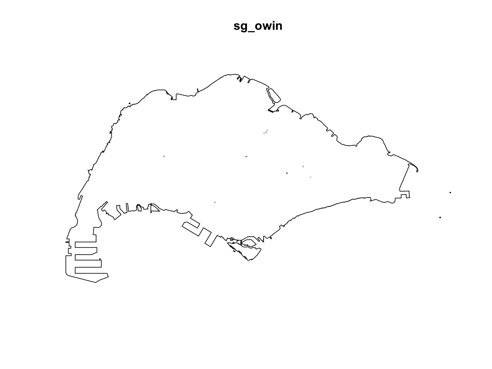
6.3 Combining Point Events Object and owin Object
childcareSG_ppp = childcare_ppp[sg_owin]childcareSG_pppMarked planar point pattern: 1925 points
Mark variables:
OBJECTID ADDRESSBLOCKHOUSENUMBER ADDRESSBUILDINGNAME ADDRESSPOSTALCODE
ADDRESSSTREETNAME ADDRESSTYPE DESCRIPTION HYPERLINK LANDXADDRESSPOINT
LANDYADDRESSPOINT NAME PHOTOURL ADDRESSFLOORNUMBER INC_CRC FMEL_UPD_D
ADDRESSUNITNUMBER
window: polygonal boundary
enclosing rectangle: [2667.54, 55941.94] x [21448.47, 50256.33] units7 Clark-Evan Test for Nearest Neighbour Analysis
The Clark-Evans test compares the observed nearest-neighbour distances with what would be expected under complete spatial randomness. An index below 1 suggests clustering, while an index above 1 suggests a more regular pattern.
7.1 Perform the Clark-Evans Test Without CSR
ce_sg <- clarkevans.test(childcareSG_ppp,
correction="none",
clipregion=sg_owin,
alternative=c("clustered"))
ce_sg
Clark-Evans test
No edge correction
Z-test
data: childcareSG_ppp
R = 0.53532, p-value < 2.2e-16
alternative hypothesis: clustered (R < 1)7.2 Perform the Clark-Evans Test With CSR
set.seed(1234)
ce_sg_mc <- clarkevans.test(childcareSG_ppp,
correction="none",
clipregion=sg_owin,
alternative=c("clustered"),
method="MonteCarlo",
nsim=99)
ce_sg_mc
Clark-Evans test
No edge correction
Monte Carlo test based on 99 simulations of CSR with fixed n
data: childcareSG_ppp
R = 0.53532, p-value = 0.01
alternative hypothesis: clustered (R < 1)
TipMy interpretation
The rendered Singapore-wide Clark-Evans index is 0.535. Since it is below 1, the nearest-neighbour pattern supports clustering rather than a regular spacing. The Monte Carlo p-value is 0.01, so the result is statistical evidence against CSR. This does not explain why childcare centres cluster, but it does show that the observed spacing is unlikely to be purely random under this simple null model.
8 Kernel Density Estimation Method
KDE turns the point pattern into a continuous intensity surface. I use it after the Clark-Evans test because it answers a slightly different question: not whether the pattern is random, but where concentrations appear more clearly on the map.
8.1 Working With Automatic Bandwidth Selection Method
kde_SG_diggle <- density(
childcareSG_ppp,
sigma=bw.diggle,
edge=TRUE,
kernel="gaussian")plot(kde_SG_diggle)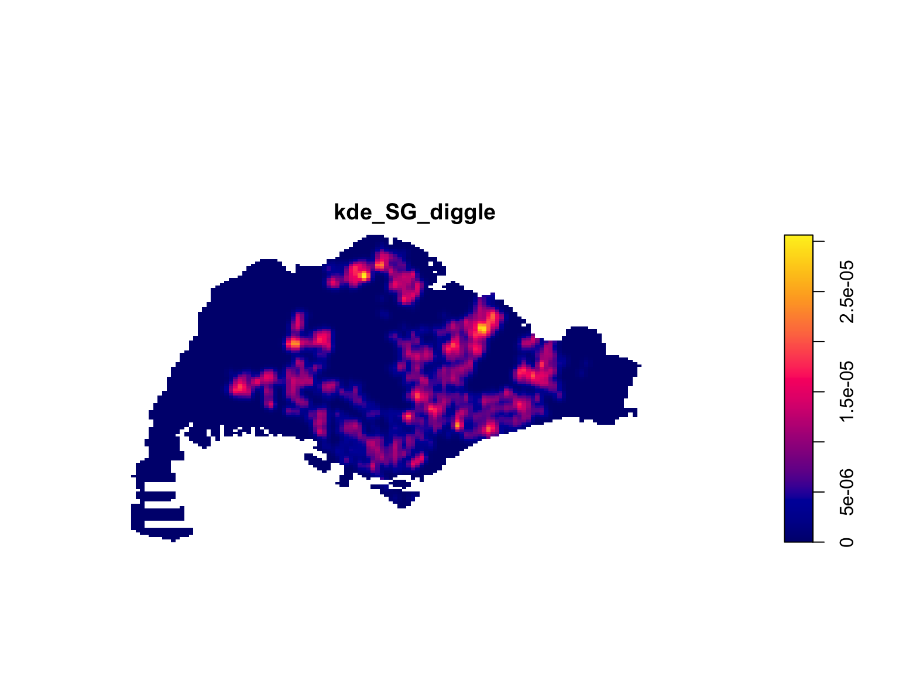
summary(kde_SG_diggle)real-valued pixel image
128 x 128 pixel array (ny, nx)
enclosing rectangle: [2667.538, 55941.94] x [21448.47, 50256.33] units
dimensions of each pixel: 416 x 225.0614 units
Image is defined on a subset of the rectangular grid
Subset area = 669941961.12307 square units
Subset area fraction = 0.437
Pixel values (inside window):
range = [-6.027666e-21, 3.063698e-05]
integral = 1927.788
mean = 2.877545e-068.2 Rescalling KDE Values
bw <- bw.diggle(childcareSG_ppp)
bw sigma
295.9712 childcareSG_ppp_km <- rescale.ppp(
childcareSG_ppp, 1000, "km")kde_childcareSG_km <- density(childcareSG_ppp_km,
sigma=bw.diggle,
edge=TRUE,
kernel="gaussian")plot(kde_childcareSG_km)8.3 Working With Different Automatic Badwidth Methods
bw.CvL(childcareSG_ppp_km) sigma
4.357209 bw.scott(childcareSG_ppp_km) sigma.x sigma.y
2.159749 1.396455 bw.ppl(childcareSG_ppp_km) sigma
0.378997 bw.diggle(childcareSG_ppp_km) sigma
0.2959712 kde_childcareSG.ppl <- density(childcareSG_ppp_km,
sigma=bw.ppl,
edge=TRUE,
kernel="gaussian")
par(mfrow=c(1,2))
plot(kde_childcareSG_km, main = "bw.diggle")
plot(kde_childcareSG.ppl, main = "bw.ppl")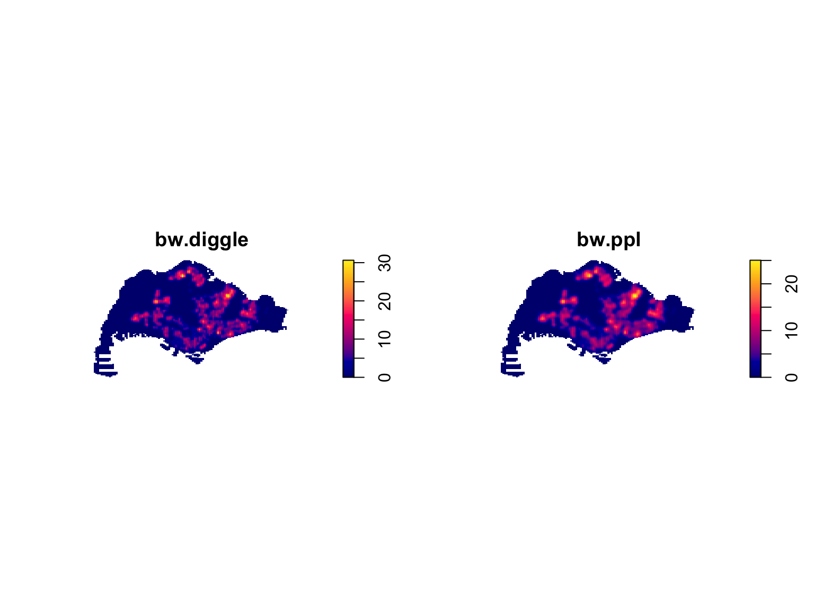
TipMy finding from the bandwidth comparison
The two bandwidth choices tell slightly different stories. bw.diggle keeps the surface more locally responsive, while bw.ppl gives a smoother island-wide impression. For this childcare dataset, I would use the sharper surface for exploration and the smoother surface when explaining the broad pattern to a non-technical reader.
8.4 Working With Different Kernel Methods
par(mfrow=c(2,2))
plot(density(childcareSG_ppp_km,
sigma=0.2959712,
edge=TRUE,
kernel="gaussian"),
main="Gaussian")
plot(density(childcareSG_ppp_km,
sigma=0.2959712,
edge=TRUE,
kernel="epanechnikov"),
main="Epanechnikov")
plot(density(childcareSG_ppp_km,
sigma=0.2959712,
edge=TRUE,
kernel="quartic"),
main="Quartic")
plot(density(childcareSG_ppp_km,
sigma=0.2959712,
edge=TRUE,
kernel="disc"),
main="Disc")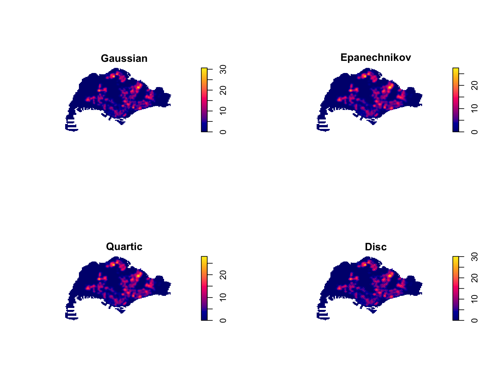
NoteMy reading of the kernel plots
The kernel choice changes the texture of the density surface less dramatically than the bandwidth choice. I read the four panels mainly as a sensitivity check: the strongest concentration zones remain visible, so the broad interpretation does not depend on only one kernel shape.
9 Fixed and Adaptive KDE
9.1 Computing KDE by Using Fixed Bandwidth
kde_childcareSG_fb <- density(childcareSG_ppp_km,
sigma=0.6,
edge=TRUE,
kernel="gaussian")
plot(kde_childcareSG_fb)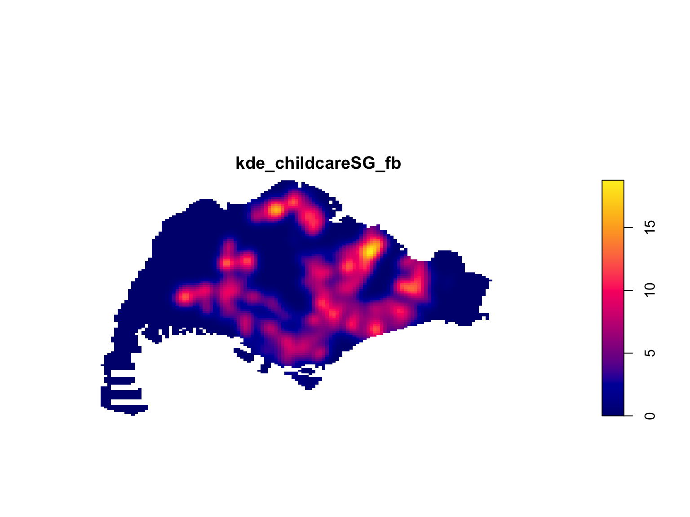
9.2 Computing KDE by Using Adaptive Bandwidth
kde_childcareSG_ab <- adaptive.density(
childcareSG_ppp_km,
method="kernel")
plot(kde_childcareSG_ab)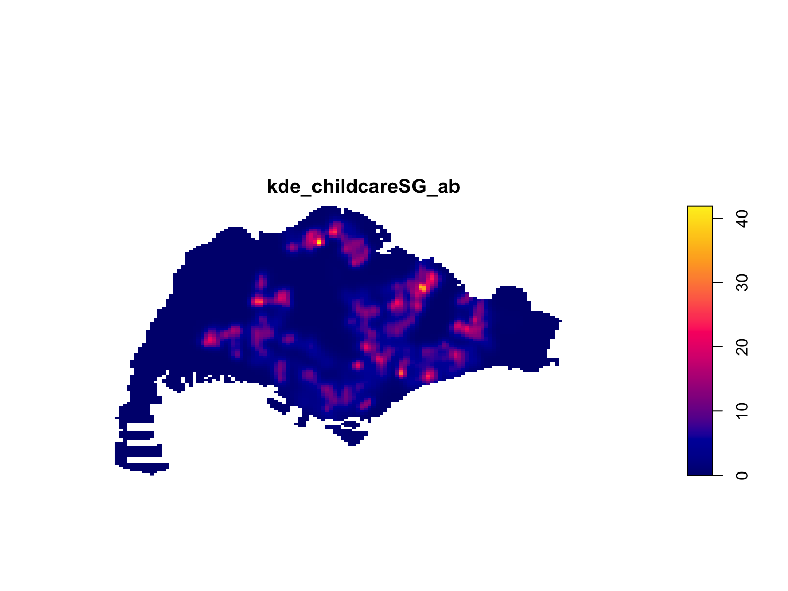
par(mfrow=c(1,2))
plot(kde_childcareSG_fb, main = "Fixed bandwidth")
plot(kde_childcareSG_ab, main = "Adaptive bandwidth")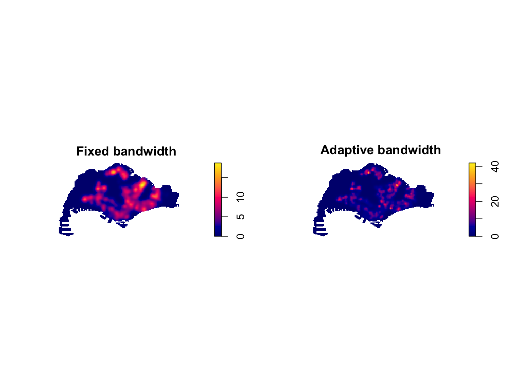
TipWhy bandwidth matters
The bandwidth changes how strongly the surface is smoothed. A smaller bandwidth keeps local peaks sharper, while a larger fixed bandwidth makes the pattern easier to read at a broad scale but can blur nearby concentrations. The adaptive KDE is useful here because childcare centres are not evenly spread across Singapore; it keeps more local detail where points are dense and smooths more where points are sparse.
10 Plotting Cartographic Quality KDE Map
10.1 Converting Gridded Output Into Raster
kde_childcareSG_bw_terra <- rast(kde_childcareSG_km)
NoteLocal cartographic note
The KDE object above was calculated from a point pattern rescaled to kilometres. Before assigning EPSG:3414 for mapping, I convert the raster extent back to metres so the cartographic coordinates match Singapore SVY21.
kde_ext <- ext(kde_childcareSG_bw_terra)
ext(kde_childcareSG_bw_terra) <- ext(
kde_ext[1] * 1000,
kde_ext[2] * 1000,
kde_ext[3] * 1000,
kde_ext[4] * 1000
)class(kde_childcareSG_bw_terra)[1] "SpatRaster"
attr(,"package")
[1] "terra"kde_childcareSG_bw_terraclass : SpatRaster
size : 128, 128, 1 (nrow, ncol, nlyr)
resolution : 416.2063, 225.0614 (x, y)
extent : 2667.538, 55941.94, 21448.47, 50256.33 (xmin, xmax, ymin, ymax)
coord. ref. :
source(s) : memory
name : lyr.1
min value : -0
max value : 30.636981
unit : km10.2 Assigning Projection Systems
crs(kde_childcareSG_bw_terra) <- "EPSG:3414"kde_childcareSG_bw_terraclass : SpatRaster
size : 128, 128, 1 (nrow, ncol, nlyr)
resolution : 416.2063, 225.0614 (x, y)
extent : 2667.538, 55941.94, 21448.47, 50256.33 (xmin, xmax, ymin, ymax)
coord. ref. : SVY21 / Singapore TM (EPSG:3414)
source(s) : memory
name : lyr.1
min value : -0
max value : 30.636981
unit : km10.3 Plotting KDE Map With tmap
tm_shape(kde_childcareSG_bw_terra) +
tm_raster(col.scale =
tm_scale_continuous(
values = "viridis"),
col.legend = tm_legend(
title = "Density values",
title.size = 0.7,
text.size = 0.7,
bg.color = "white",
bg.alpha = 0.7,
position = tm_pos_in(
"right", "bottom"),
frame = TRUE)) +
tm_graticules(labels.size = 0.7) +
tm_compass() +
tm_layout(scale = 1.0)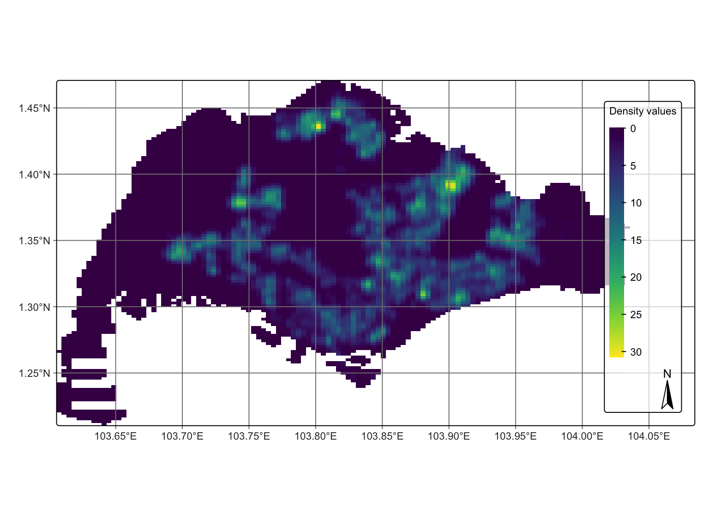
TipWhat I noticed on the KDE map
The cartographic KDE map makes the density result easier to discuss because it places the intensity surface back into Singapore coordinates. The higher density areas appear as a spatial surface rather than isolated points, which is more useful for describing service concentration.
11 First Order SPPA at the Planning Subzone Level
11.1 Geospatial Data Wrangling
pg <- mpsz_cl %>%
filter(PLN_AREA_N == "PUNGGOL")
tm <- mpsz_cl %>%
filter(PLN_AREA_N == "TAMPINES")
ck <- mpsz_cl %>%
filter(PLN_AREA_N == "CHOA CHU KANG")
jw <- mpsz_cl %>%
filter(PLN_AREA_N == "JURONG WEST")11.1.1 Extracting Study Area
par(mfrow=c(2,2))
plot(st_geometry(pg), main = "Ponggol")
plot(st_geometry(tm), main = "Tampines")
plot(st_geometry(ck), main = "Choa Chu Kang")
plot(st_geometry(jw), main = "Jurong West")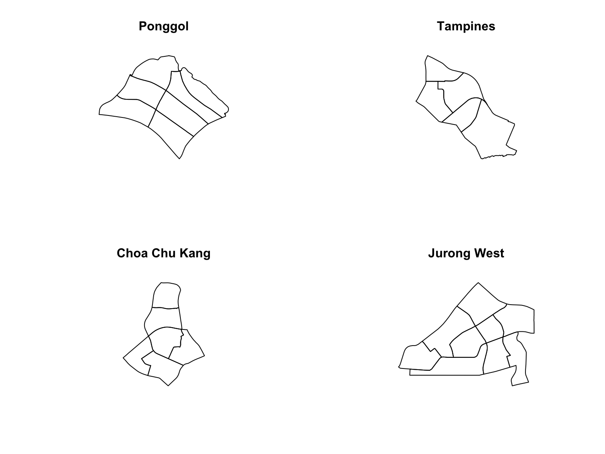
11.1.2 Creating owin Object
pg_owin = as.owin(pg)
tm_owin = as.owin(tm)
ck_owin = as.owin(ck)
jw_owin = as.owin(jw)11.1.3 Combining Point Events Object and owin Object
childcare_pg_ppp = childcare_ppp[pg_owin]
childcare_tm_ppp = childcare_ppp[tm_owin]
childcare_ck_ppp = childcare_ppp[ck_owin]
childcare_jw_ppp = childcare_ppp[jw_owin]childcare_pg_ppp.km = rescale.ppp(childcare_pg_ppp, 1000, "km")
childcare_tm_ppp.km = rescale.ppp(childcare_tm_ppp, 1000, "km")
childcare_ck_ppp.km = rescale.ppp(childcare_ck_ppp, 1000, "km")
childcare_jw_ppp.km = rescale.ppp(childcare_jw_ppp, 1000, "km")par(mfrow=c(2,2))
plot(unmark(childcare_pg_ppp.km),
main="Punggol")
plot(unmark(childcare_tm_ppp.km),
main="Tampines")
plot(unmark(childcare_ck_ppp.km),
main="Choa Chu Kang")
plot(unmark(childcare_jw_ppp.km),
main="Jurong West")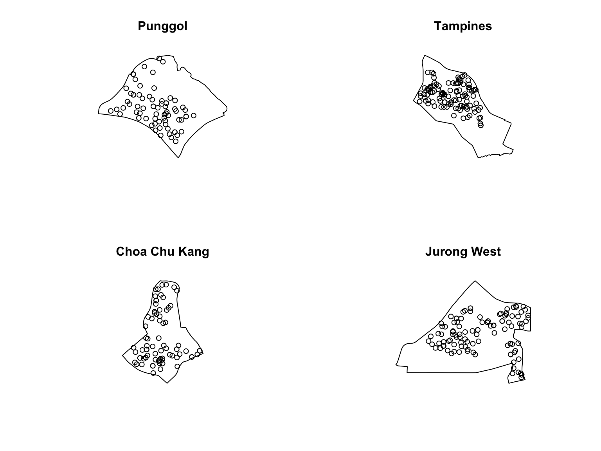
NoteComparing local point patterns
The four planning areas do not look equally dense or equally spread out. This is why I think the local windows are important: a national pattern can hide the fact that each planning area has its own geometry, number of centres, and internal spacing.
11.2 Clark and Evans Test
11.2.1 Choa Chu Kang Planning Area
set.seed(1234)
ce_ck <- clarkevans.test(childcare_ck_ppp,
correction="none",
clipregion=NULL,
alternative=c("two.sided"),
nsim=999)
ce_ck
Clark-Evans test
No edge correction
Z-test
data: childcare_ck_ppp
R = 0.84097, p-value = 0.008866
alternative hypothesis: two-sided11.2.2 Tampines Planning Area
set.seed(1234)
ce_tm <- clarkevans.test(childcare_tm_ppp,
correction="none",
clipregion=NULL,
alternative=c("two.sided"),
nsim=999)
ce_tm
Clark-Evans test
No edge correction
Z-test
data: childcare_tm_ppp
R = 0.66817, p-value = 6.58e-12
alternative hypothesis: two-sided
TipSingapore-wide vs planning-area view
The planning-area tests show why the analysis window matters. The Singapore-wide result summarises one point pattern over the whole country, while the Choa Chu Kang and Tampines windows focus on local spacing inside each planning area. In this render, Choa Chu Kang has a Clark-Evans index of 0.841 and Tampines has an index of 0.668, so the local interpretation should not be read as a simple copy of the national pattern.
11.3 Computing KDE Surfaces by Planning Area
par(mfrow=c(2,2))
plot(density(childcare_pg_ppp.km,
sigma=bw.diggle,
edge=TRUE,
kernel="gaussian"),
main="Punggol")
plot(density(childcare_tm_ppp.km,
sigma=bw.diggle,
edge=TRUE,
kernel="gaussian"),
main="Tempines")
plot(density(childcare_ck_ppp.km,
sigma=bw.diggle,
edge=TRUE,
kernel="gaussian"),
main="Choa Chu Kang")
plot(density(childcare_jw_ppp.km,
sigma=bw.diggle,
edge=TRUE,
kernel="gaussian"),
main="Jurong West")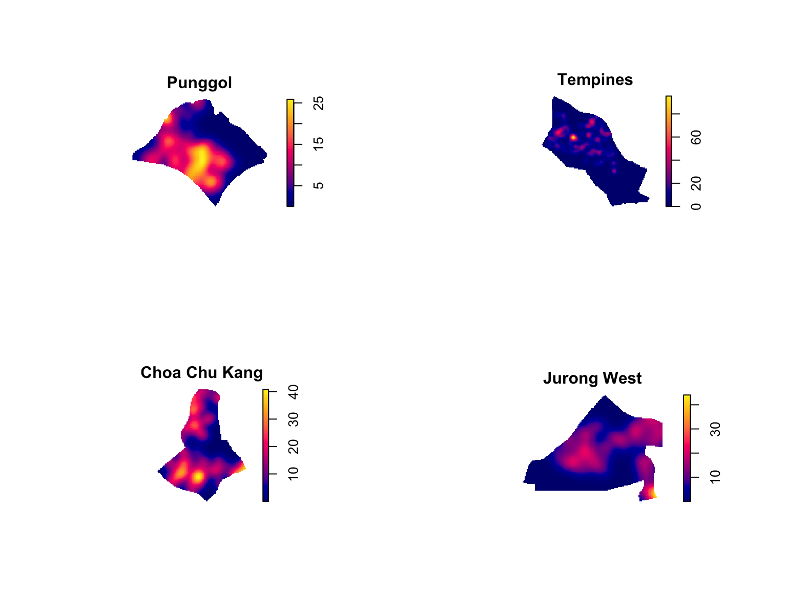
11.4 My Enhanced View
focus_areas <- bind_rows(ck, tm)
focus_points <- st_filter(childcare_sf, st_union(focus_areas))
tm_shape(focus_areas) +
tm_polygons(fill = "PLN_AREA_N",
fill_alpha = 0.25,
col = "#31515f",
lwd = 1.2,
fill.legend = tm_legend(title = "Planning area")) +
tm_shape(focus_points) +
tm_dots(fill = "#0f766e",
col = "white",
size = 0.08,
lwd = 0.3) +
tm_title("Childcare centres in Choa Chu Kang and Tampines") +
tm_layout(frame = FALSE)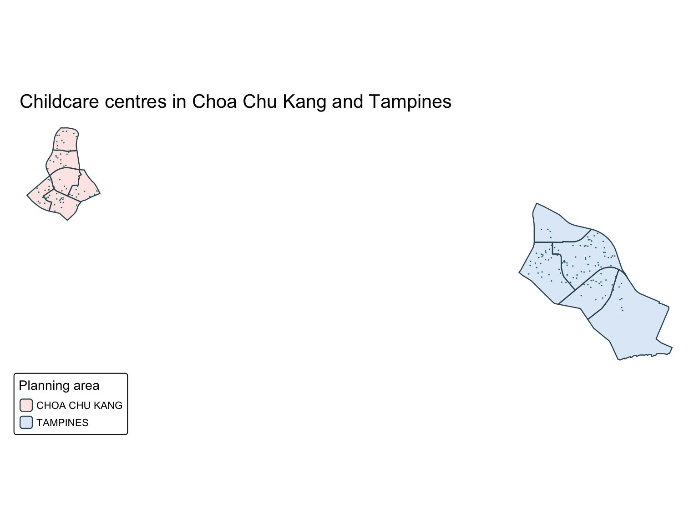
TipMy finding from the focus map
The focus map is useful because Choa Chu Kang and Tampines are easier to compare when they are shown together with the same symbol style. Tampines appears to have a more visibly distributed set of childcare centres, while Choa Chu Kang looks more constrained by its planning-area shape.
12 Beyond the Basic Density Surface
The KDE map is visually strong, but I should not over-read it as a demand or accessibility map. It shows where childcare centres are concentrated, not whether the number of centres is enough for nearby children or whether families can reach them easily.
ImportantWhat I would check next
The next step would be to bring in child population, residential land use, or walking-network distance. That would move the analysis from “where are centres dense?” to “where might service provision be relatively high or low compared with potential demand?”
13 Clark-Evans vs KDE
Clark-Evans gives a statistical check of nearest-neighbour spacing, while KDE gives a visual intensity surface. I would not treat them as substitutes. The test helps me ask whether the pattern departs from CSR, while KDE helps me inspect where concentrations are stronger.
14 What I Learned
- CRS matters because the main calculations use distance.
pppandowinare the key objects that letspatstatunderstand the point events and the analysis window.- KDE is useful for visualising intensity, but the hotspot appearance depends on bandwidth.
- Changing the study window can change the interpretation, especially when comparing Singapore-wide and planning-area views.
15 Limitations
The point pattern shows where childcare centres are located, but it does not directly explain the causes of clustering. CSR is also a simple null model, so the result should be read as a starting point rather than a full explanation of childcare service provision.
16 References
- R for Geospatial Data Science and Analytics. Chapter 4: First-order Spatial Point Patterns Analysis Methods. https://r4gdsa.netlify.app/chap04